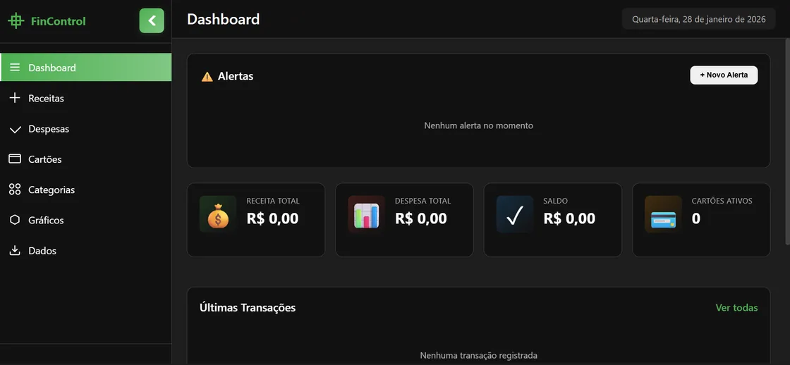
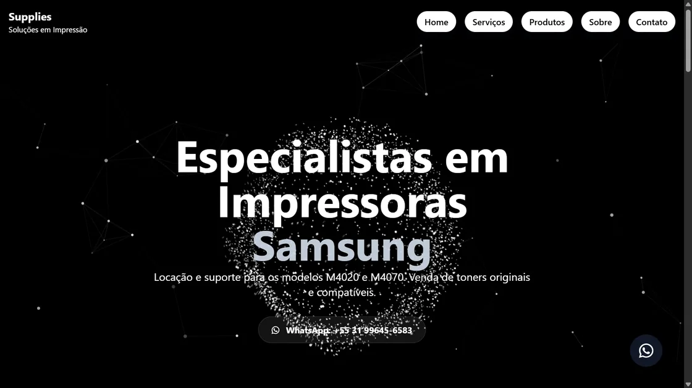
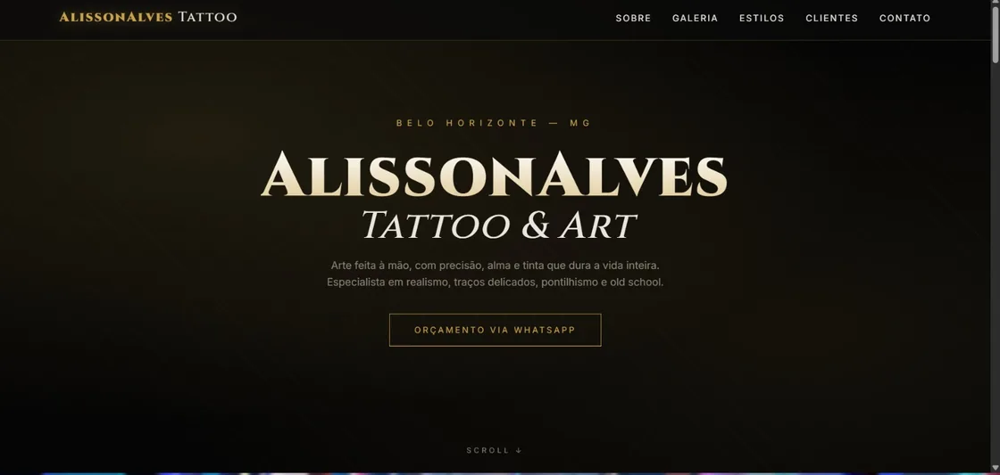
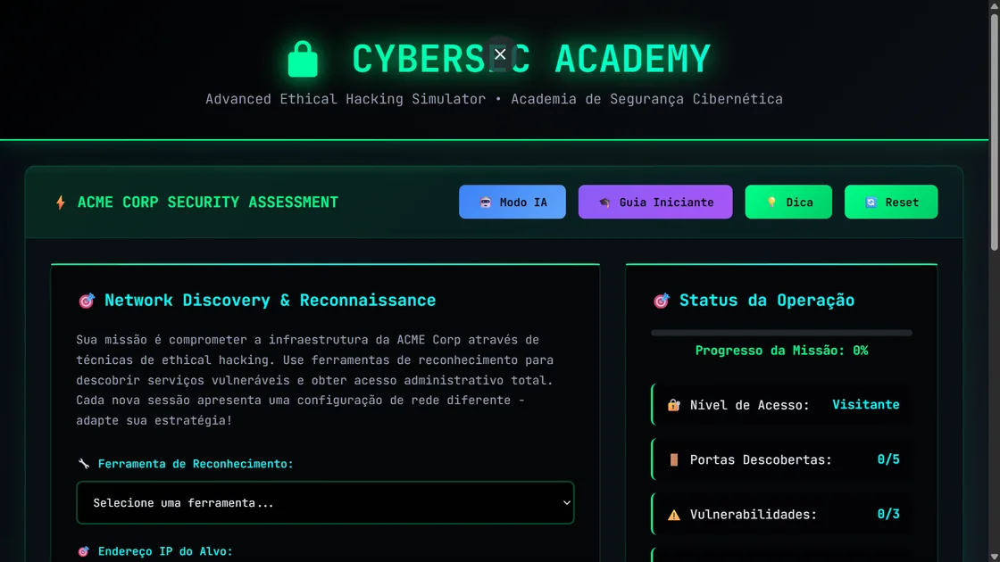

Desenvolvimento de Software
Criação de aplicações web dinâmicas e responsivas, com código limpo e orientado a objetos.
Disponível para oportunidades
// Olá, eu sou
Profissional de TI com experiência prática em desenvolvimento de software, sistemas hospitalares e banco de dados — do levantamento de requisitos à homologação e ao treinamento de usuários. Cursando Ciência da Computação.
// sobre-mim
Um profissional de TI em ascensão, com experiência real em ambiente hospitalar.
Sou um profissional de Tecnologia da Informação cursando Ciência da Computação, com experiência prática em desenvolvimento de software, sistemas hospitalares e banco de dados. No Hospital Metropolitano Doutor Célio de Castro, atuei diretamente com o sistema de gestão hospitalar Tasy e com Oracle 12g: levantamento de requisitos, fluxos de negócio, criação de objetos de banco, consultas SQL, testes, homologação e treinamento de usuários.
Antes disso, construí uma base sólida de atendimento e resolução de problemas como técnico de manutenção de impressoras, atendendo clientes corporativos e domésticos. Essa trajetória me ensinou algo que levo para todo projeto: entregar com qualidade, documentar com clareza e pensar sempre em quem vai usar.
// competências
Ferramentas e tecnologias que uso no dia a dia — do código ao banco de dados.
Criação de aplicações web dinâmicas e responsivas, com código limpo e orientado a objetos.
Modelagem, criação e manipulação de objetos, consultas e relatórios otimizados.
Suporte a sistemas corporativos, segurança de endpoints e manutenção de hardware.
// experiência
Onde já atuei e o que entreguei em cada experiência.
Hospital Metropolitano Doutor Célio de Castro
Atuação Autônoma · Prestação de Serviços
// projetos
Projetos pessoais desenvolvidos e publicados — do backend com PHP e MySQL ao front-end responsivo. Todos estão no ar e podem ser visitados.

Sistema web completo de finanças pessoais: controle de despesas, receitas e relatórios detalhados em tempo real.

Site comercial para locação de impressoras, com interface profissional, intuitiva e focada em conversão de clientes.

Portfólio para estúdio de tatuagem com galeria de estilos (realismo, fine line, old school) e integração direta com WhatsApp.

Jogo interativo temático de hacker, com desafios de programação, interface dinâmica e sistema de pontuação.
Mais projetos e experimentos no meu GitHub
// formação
Base acadêmica em construção, com foco em ciência e tecnologia.
Instituto Una Barreiro — Belo Horizonte, MG
Desenvolvimento de software e aplicações, programação, banco de dados, análise e projeto de sistemas.
Escola Estadual Cecília Meireles
Formação geral completa, com base sólida em ciências exatas e desenvolvimento do raciocínio analítico.
// certificações
Formação contínua em tecnologia e idiomas.
Cisco Networking Academy
Cisco Networking Academy
Cisco Networking Academy
Fundação Estudar · Harvard
Udemy
Achieve Languages
Academia Washington
// contato
Estou disponível para oportunidades em desenvolvimento, suporte técnico e banco de dados. Escolha o canal preferido:
(31) 98204-3087
A resposta mais rápida é por aqui
joaovitoralvesrodrigues891@gmail.com
Para propostas e currículo formal
João Vitor Alves Rodrigues
Perfil profissional completo
GitHub
github.com/lebot007
Código, projetos e contribuições
Localização
Belo Horizonte — MG
Minas Gerais, Brasil
Currículo
Baixar CV em PDF
Versão completa para candidaturas
Prefere e-mail? joaovitoralvesrodrigues891@gmail.com